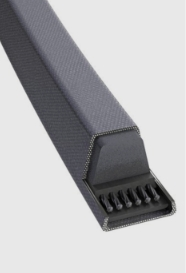
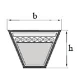
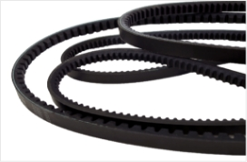
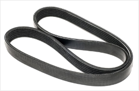
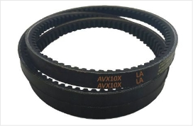
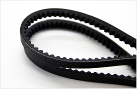
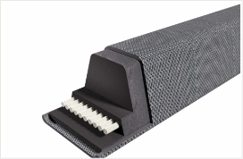

Клиновые ремни классического сечения высшего качества,
предлагаемые Вашему вниманию, возможно купить как за наличный, так и безналичный расчет. Данные ремни предназначены для работы в силовых приводах промышленного оборудования.


Области применения клиновых ремней классического сечения
- Классические промышленные и сельскохозяйственные приводы;
- Автомобилестроение;
- Системы с возможностью обратного хода;
- Передачи с натяжным роликом;
- Передачи больших мощностей в конструкциях с натяжным роликом при небольших шкивах;
- Пригодность для большинства существующих ременных передач;
- Конструкции с наружным натяжением малого диаметра.
Клиновые ремни классического сечения - свойства
- электропроводность соответственно ISO 1813 относительная устойчивость к маслам и тропическим условиям;
- работа в интервале температур от -55ºC до +70ºC;
- устойчивость к пыли.
Клиновые ремни классического сечения - варианты исполнения
- Клиновые ремни вулканизированы в специальном кожухе и упрочнены полиэфирным кордом, который отличается высокой прочностью и растягивается в незначительной степени.
- Доступны в двух вариантах исполнения: клиновые ремни узкого сечения, соответствующие DIN 7753 и классические клиновые ремни, соответствующие DIN 2215.
- Клиновые приводные ремни классического сечения являются маслостойкими и антистатичными (по стандарту ISO 1813).
Клиновые ремни классического сечения обладают рядом достоинств:
- Клиновые ремни классического сечения имеют отличное соотношение эксплуатационных качеств и стоимости.
- Клиновые ремни классического сечения обеспечивают высокую надежность и эффективность.
- Длительный срок службы позволяет снизить затраты на замену и техническое обслуживание.
Похожие товары

Классические клиновые
ремни
Подробнее

Узкие клиновые
ремни
Подробнее

Широкоугольные
клиновые ремни
Подробнее

Клиновые ремни
повышенной мощьности
Подробнее

Клиновые ремни
повышенной мощьности
Подробнее